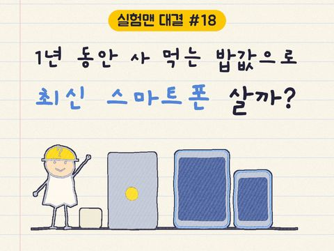

만약 하루가 매일 10분씩 길어진다면?
3줄 요약
- 하루가 매일 10분씩 길어진다고 가정하면, 6일째에 하루가 25시간이 돼요. 그날 해는 원래보다 2.5시간 늦게 떠요.
- 36일째 하루 30시간, 144일째 하루 48시간이에요.
- 864일째(약 2.4년)엔 해가 한 번 뜨고 지는 데 일주일이 걸려요.
가정
- N일째 하루 길이 = 24시간 + 10분 × N.
- 우리 시계는 24시간 그대로예요. 그래서 해 뜨는 시각이 매일 조금씩 밀려요. N일째까지 밀린 시간 = 5N(N−1)분.
결과
| N일째 | 하루 길이 | 해 뜨는 시각(시계 기준) | 몸시계(24.18시간)와 차이 |
|---|---|---|---|
| 6일째 | 25시간 | 원래보다 2.5시간 늦게 | 0.82시간 |
| 36일째 | 30시간 | 원래보다 9.0시간 늦게 | 5.82시간 |
| 144일째 | 48시간 | 원래보다 12.0시간 늦게(낮밤이 거의 뒤집힘) | 23.82시간 |
| 864일째 | 168시간(7일) | — | — |
| 4,176일째 | 720시간(30일) | — | — |
밥·잠·일도 하루 길이만큼 늘면
하루 3끼, 잠 8시간, 일 8시간(근로기준법 제50조 제2항의 1일 8시간)을 하루 길이에 맞춰 늘렸다고 가정했어요.
| N일째 | 하루 길이 | 끼니 | 잠 | 일 | 아침 → 점심 |
|---|---|---|---|---|---|
| 144일째 | 48시간 | 6끼 | 16시간 | 16시간 | 16시간 |
| 288일째 | 72시간 | 9끼 | 24시간 | 24시간 | 24시간(1.0일) |
| 864일째 | 168시간(일주일) | 21끼 | 56시간 | 56시간 | 56시간(2.3일) |
| 4,176일째 | 720시간(한 달) | 90끼 | 240시간 | 240시간 | 240시간(10.0일) |
| 52,416일째 | 8,760시간(1년) | 1,095끼 | 2,920시간 | 2,920시간 | 2,920시간(121.7일, 약 4개월) |
이 숫자는 어디서 왔나요
출처
기준일 data_collect가 2026년 11월 20일에 만든 사실표(5982566d, 5e608503)예요.
| 숫자 | 출처 |
|---|---|
| 하루 일 8시간 | 근로기준법 제50조 제2항 |
| 몸시계 주기 24.18시간 | Czeisler 외(1999) Science 284:2177 |
| 날짜·해 뜨는 시각 계산 | 우리 계산(data/mart/whatif/whatif4_timeline.csv) |
어떻게 셌나요
- 하루 길이: (목표 시간 − 24) × 60 ÷ 10 = N.
- 해 뜨는 시각: 1일째 10분, 2일째 20분…이 쌓여 N일째까지 10 × (0 + 1 + … + (N−1)) = 5N(N−1)분 밀려요. 24시간 단위는 빼고 남은 시간만 적었어요.
- 밥·잠·일: 하루 3끼·잠 8시간·일 8시간 × (하루 길이 ÷ 24). 아침에서 점심까지는 하루의 3분의 1로 봤어요.
- 몸시계: 사람 몸시계 주기는 평균 24.18시간으로 측정됐어요.
한계 2가지
이 데이터로 말할 수 없는 것
- 상상 실험이에요. 지구가 느리게 돌 때 생기는 다른 변화는 넣지 않았어요.
- 출발 해 뜨는 시각(서울 춘분)은 천문연구원 값을 보지 못해 '원래보다 몇 시간 늦게'로만 적었어요.
다음 대결
대결 다 보기
지하철 vs 버스(서울)
서울 사람은 지하철과 버스 중 뭘 더 많이 탈까? 1996·2010·2023 세 판 승부
A지하철vsB버스
투표하러 가기

혼자 영화, 10% 넘을까?
영화 본 사람 중 '주로 혼자' 본 사람, 10% 넘을까?
A넘는다vsB안 넘는다
투표하러 가기
대결실험맨11월 22일투표했어요결과: 못 넘는다사 온 커피값, 밥값의 5% 넘을까
실험맨, 사 온 커피값이 밖에서 먹는 밥값의 5%를 넘을까?
A넘는다vsB못 넘는다
투표하러 가기

1년 밥값 vs 최신 스마트폰
실험맨이 1년 동안 사 먹는 밥값(배달 포함)으로 최신 스마트폰을 살 수 있을까?
A산다vsB못 산다
투표하러 가기

20대 vs 우리 할아버지
20대 여성 실험맨 vs 65세 이상 남성 실험맨, 네 판 승부로 하루 운동을 더 많이 하는 쪽은?
A20대 여성vsB65세 이상 남성
투표하러 가기

출퇴근 vs 연차
실험맨이 1년 동안 출퇴근에 쓰는 시간과 연차 휴가로 쉬는 시간, 세 판 승부로 더 긴 쪽은?
A출퇴근vsB연차 휴가
투표하러 가기

경복궁 vs 에버랜드
경복궁 vs 에버랜드, 다섯 판 승부로 1년에 사람이 더 많이 찾는 곳은?
A경복궁vsB에버랜드
투표하러 가기

1년 쓰는 물 vs 레인 한 줄
실험맨 혼자 1년 쓴 수돗물로 25m 수영장 레인 한 줄을 채울 수 있을까?
A채운다vsB못 채운다
투표하러 가기
새 글 나오면 받아 보기
피드 리더 앱에 이 사이트 주소를 한 번 넣어 두면, 새 글이 올라올 때 앱에 떠요. 가입이나 메일 주소는 필요 없어요.
받는 법 보기
- 피드 리더 앱을 하나 골라요. 새 글을 모아 보여 주는 앱이에요. 예를 들면 Feedly나 Inoreader가 있어요. 둘 다 무료고 웹·휴대폰에서 써요.
- 앱에서 '구독 추가'(+)를 누르고 아래 주소를 붙여 넣어요.
- 끝이에요. 새 글이 올라오면 앱 목록에 떠요.
https://protofu.github.io/opendata-insight/feed.xmlFeedly를 쓴다면 여기를 눌러 바로 추가할 수도 있어요.